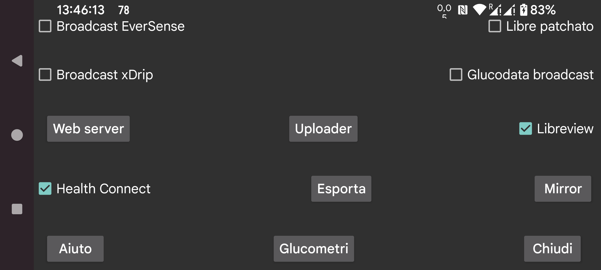

ar de es hi it ja nl pl tr uz en
Invia i valori del glucosio al minuto a Health Connect. Puoi dare ad altre app accesso a questi valori del glucosio, ad esempio Google Fit. Altre app possono a loro volta accedere a quei dati da Google Fit.
Connettiti con Libreview per inviare i valori del glucosio e i valori dei sensori Freestyle Libre 2 e 3 a Libreview e per ottenere l'account id utilizzato durante l'attivazione del sensore Freestyle Libre 3. Tocca per modificare le impostazioni.
Non c'è nulla di sbagliato nel broadcast Patched Libre in sé, ma xDrip modifica i valori quando li riceve dal broadcast Patched Libre. Poiché gli utenti utilizzano questo broadcast solo in questo modo, ho pianificato di rimuovere il broadcast.
xDrip non modifica i valori quando riceve i valori del glucosio dal broadcast EverSense o se il webserver in Juggluco è usato come sorgente dati di Nightscout.
Ancora un altro broadcast del glucosio. Può essere usato per inviare ogni minuto un valore del glucosio a xDrip. In xDrip devi impostare "640G/EverSense" come Hardware Data Source.
xDrip ne ignorerà quasi tutti a causa della sua insistenza sull'avere un valore ogni 5 minuti. Puoi rimuovere questa restrizione modificando il codice sorgente di xDrip. Cambia 4 * 60 * 1000 in 55 * 1000 in app/src/main/java/com/eveningoutpost/dexdrip/models/BgReading.java, in modo che diventi:
public static BgReading readingNearTimeStamp(long startTime)
{
long
margin = (55 * 1000);
return
readingNearTimeStamp(startTime, margin);
}
Il vantaggio rispetto al broadcast Patched Libre è che xDrip non trasforma i valori del glucosio in modo non specificato.
Invia lo stesso broadcast di xDrip "Settings → Inter-app settings → Broadcast locally". App come AndroidAPS lo ascoltano. A differenza del broadcast xDrip originale che veniva trasmesso ogni 5 minuti, Juggluco trasmette questo broadcast ogni minuto quando il sensore invia un valore del glucosio ogni minuto.
Un nuovo broadcast che ha la stessa funzione del broadcast xDrip. Una semplice app di esempio che scrive i valori del glucosio ricevuti su logcat la puoi trovare qui: Broadcast del glucosio. Se specifichi Juggluco come sorgente dati in G-Watch, devi attivare questo broadcast.
Le app che ascoltano questo broadcast sono mostrate. Seleziona le app a cui vuoi inviare questo broadcast.
Webserver che può essere usato con orologi xDrip e alcune app Nightscout. Precedentemente chiamato xDrip webserver.
Carica su un server Nightscout.
Invia tutti i dati tramite una connessione internet a un'altra istanza di Juggluco creando così un clone di Juggluco su un altro dispositivo. I dati esistenti saranno sovrascritti.
Salva i dati in un file.